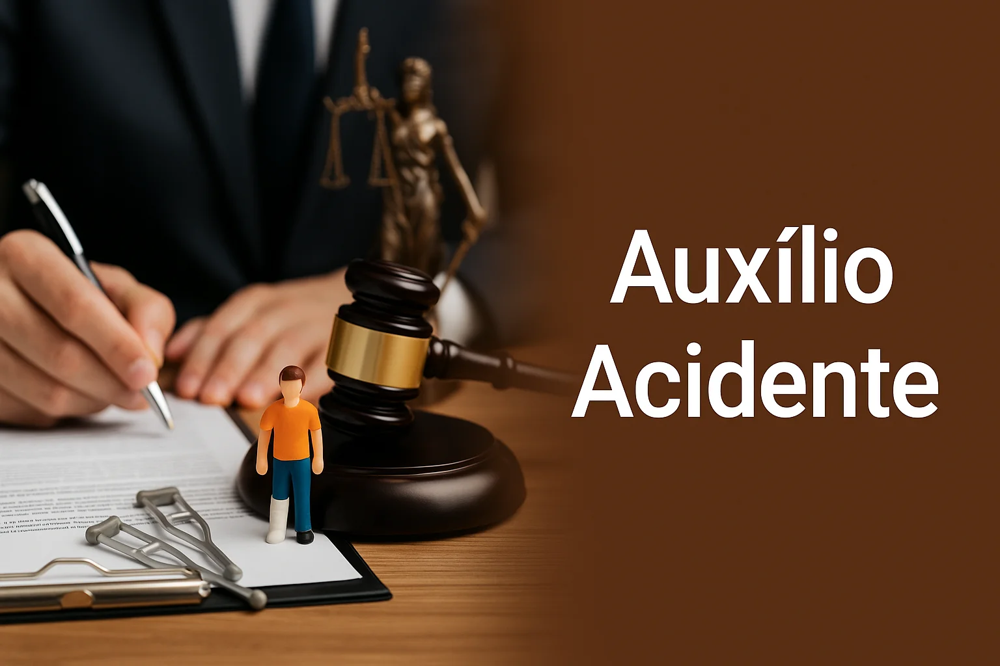

Você pode ter direito ao Auxílio-Acidente
Mesmo que o acidente não tenha ocorrido no trabalho, você pode receber uma indenização mensal do INSS caso tenha ficado com alguma sequela.

AGENDAR UMA CONSULTA
✔ Receba uma indenização mensal do INSS
✔ Continue trabalhando normalmente
✔ Acidentes em casa, trânsito ou trabalho podem gerar direito
✔ Análise especializada do seu caso
Perguntas Frequentes
Preciso parar de trabalhar para receber?
+
Não. O Auxílio-Acidente é uma indenização paga pelo INSS mesmo que você continue trabalhando normalmente.
O acidente precisa ter sido no trabalho?
+
Não. Acidentes domésticos, no trânsito ou em qualquer outra situação também podem gerar direito ao benefício.
Como saber se tenho direito?
+
Clique no botão "Agendar uma consulta" e solicite uma análise do seu caso com um especialista.
Oliveira Advogados & Associados
Av. Dr. Oscar Pirajá Martins, 741
Jardim Santo André
São João da Boa Vista – SP
CEP 13874-000